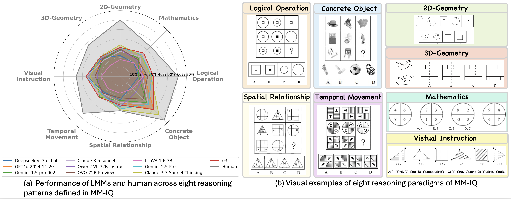
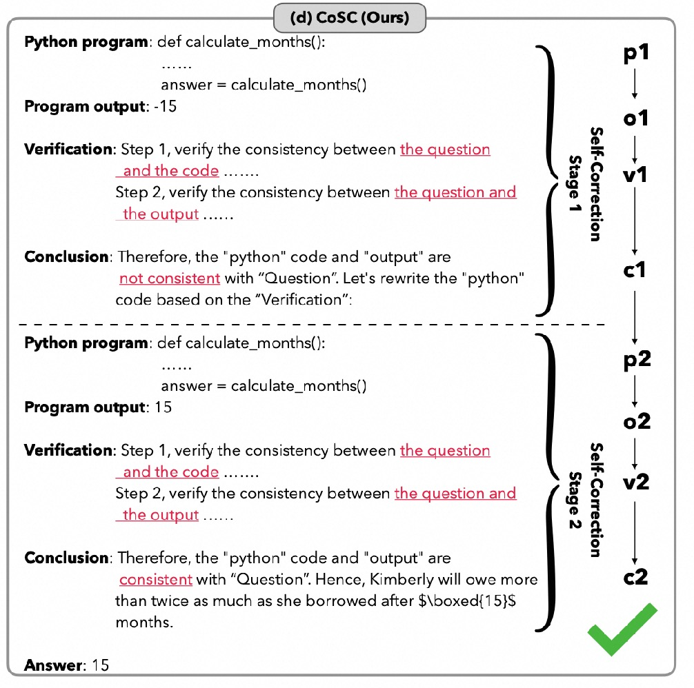
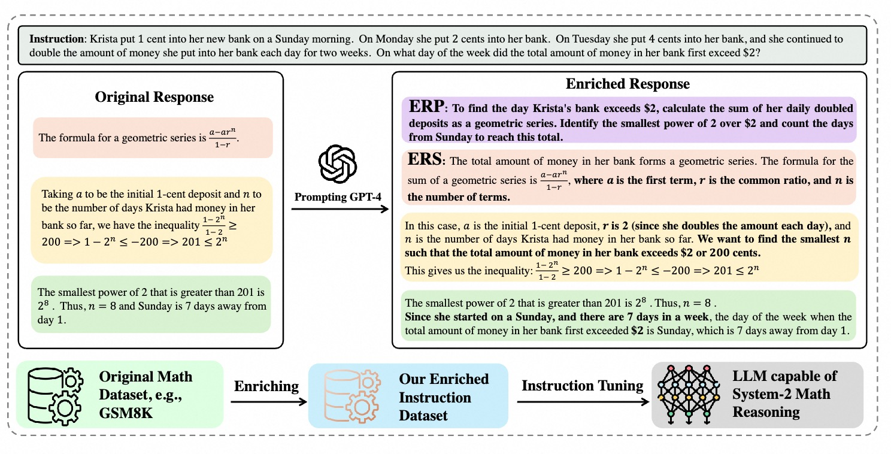
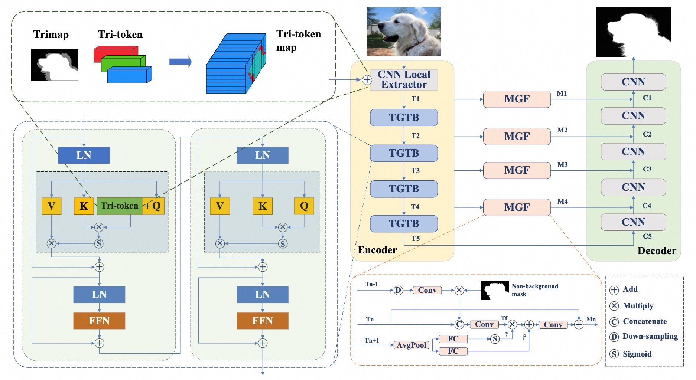
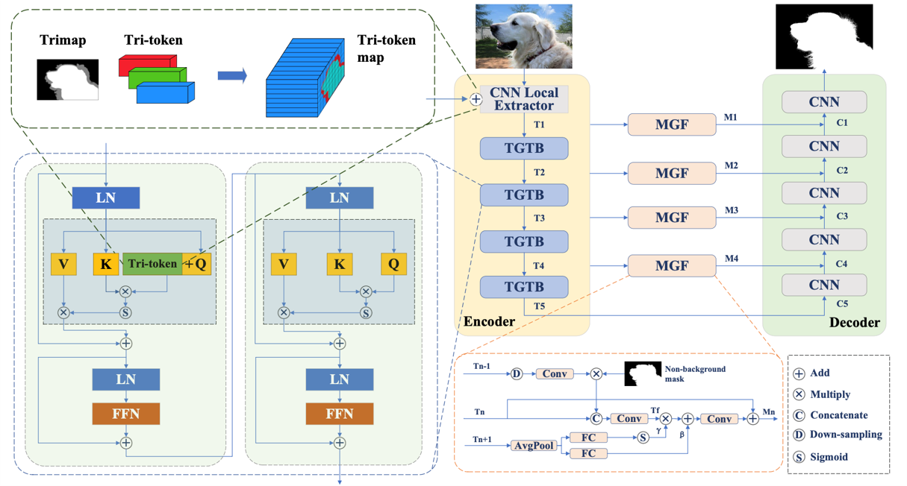

Biography
Hi, I am Huanqia Cai, a researcher at Alibaba Tongyi Lab. My research interests lie in multimodal understanding and generation. Currently, I am focused on leveraging reinforcement learning to enhance the visual fidelity of image generation and the complex reasoning capabilities of multimodal models.
I received my master's degree from the University of Chinese Academy of Sciences (UCAS). During my graduate studies, I was fortunate to intern under the supervision of Dr. Wei Liu.
Prior to joining Alibaba, I worked at Tencent, where I served as a core contributor to the Tencent Hunyuan Vision Language Model under the guidance of Dr. Han Hu.
News
- 2026 Released Z-Image (Base), the high-quality foundation model specializing in rich aesthetics and controllability. The series is now the #2 most popular Chinese model on Hugging Face and ranks 2nd in global Image Generation API usage on fal.ai.
- 2025 Released Z-Image-Turbo, an efficient foundation model specializing in photorealistic image generation.
- 2025 New paper on Self-Correction in LLMs released on arXiv.
- 2025 Released MM-IQ, a new benchmark for assessing the core reasoning capabilities of large multimodal models.
- 2024 Paper "System-2 Mathematical Reasoning" accepted to TMLR.
- 2023 The extended paper "Tri-token Equipped Transformer Model for Image Matting" released on arXiv.
- 2022 TransMatting accepted to ECCV.
- 2021 Won the 2nd Place Award in NTIRE 2021 Challenge on Multi-modal Aerial View Object Classification at CVPR 2021.
Publications






